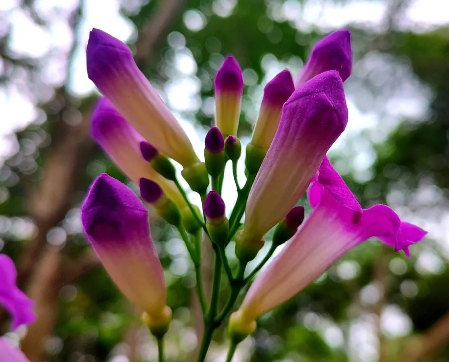

花卉与草本 · 植物界
蒜香藤 Mansoa alliacea

紫葳科蒜香藤属常绿藤本，叶揉碎有蒜味，花冠紫红至淡紫、喇叭状，花期繁密，是南方篱垣的优良观花藤本。
- 分类
- 门被子植物门纲木兰纲目唇形目科紫葳科属蒜香藤属
- 栖息环境
- 南美北部热带林缘，喜温暖湿润、阳光充足
- 地理分布
- 原产南美北部与亚马孙地区；中国华南及世界热带地区栽培
- 保护级别
- IUCN 暂无评估；栽培广泛，野生种群未受明显威胁
物种志
蒜香藤为常绿藤本，蔓长 3–5 米，茎细长，具卷须。叶对生，为二出复叶，顶生一枚卷须，小叶椭圆形，长 5–10 厘米，揉碎后有明显的蒜香味。聚伞花序腋生或顶生，花冠漏斗状，紫红色至淡紫色，长 5–6 厘米，花冠檐部 5 裂，花初开时色深，后渐淡；蒴果长条形，成熟时开裂，种子具翅。
本种原产南美北部与亚马孙地区，喜温暖湿润、阳光充足的环境，在中国华南常作篱垣、棚架与坡面绿化。它的叶片与花都有蒜味，当地民间有用其叶调味或驱虫的习俗；花期长、花量大，盛开时如紫色瀑布。蒜香藤不耐寒，北方需盆栽温室越冬；生长迅速，需定期修剪与施肥。其花蜜丰富，能吸引蜂类与蝴蝶。
形态与习性
- 蔓长3–5 米，具卷须攀援
- 花期5–10 月，花紫红至淡紫色
- 叶二出复叶，揉碎有明显蒜味
- 光照喜光，每天需充足直射光
- 水分喜湿润，忌积水
- 土壤肥沃、排水良好的壤土
- 主要用途篱垣、棚架与坡面绿化
趣味知识
- 蒜香藤的叶片揉碎后有浓烈蒜味，因此得名，但其花并没有蒜味。
- 它的花初开深紫，随后逐渐变淡，整株花期可长达半年。
- 蒜香藤原产南美，当地民间用其叶作为香料与驱虫材料。
- 它的卷须能牢牢缠住支架，是南方篱垣绿化的优良材料。